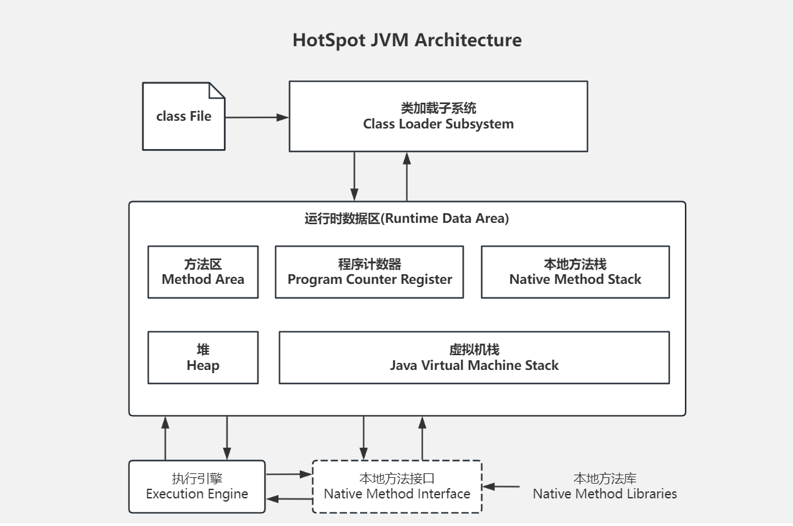

JVM
JVM简化图

| 区域名称 | 作用 |
|---|---|
| 虚拟机栈 | 用于存储正在执行的每个java方法的局部变量表等。局部变量表存放了编译期可知长度的各种基本数据类型、对象引用，方法执行完，自动释放。 |
| 堆内存 | 储存对象（包括数组对象），new来陈建的，都存储在堆内存。 |
| 方法区 | 存储已被虚拟机加载的类信息、常量、（静态变量）、即时编译器编译后的代码等数据 |
| 本地方法栈 | 当程序中调用了native的本地方法时，本地方法执行期间的内存区域 |
| 程序计数器 | 程序计数器是CPU中的寄存器，它包含每一个线程下一条要执行的指令地址 |
类加载过程
-
加载
- 将class文件字节码内容加载到内存中，并将这些静态数据转换成方法区中的运行时数据结构，在堆中生成一个代表这个类的java.lang.Class对象，作为方法区类数据访问入口。（这个过程需要类加载器参与）
-
链接：将java类的二进制代码合并到JVM的运行状态中的过程
- 验证：确保加载的类信息符合JVM规范，没有安全方面的问题
- 准备：正式为类变量（static变量）分配内存并设置类变量的初始值阶段，这些内存都在方法区中进行分配
- 解析：虚拟机常量池的符号引用替换为直接引用的过程
-
初始化
- 初始化阶段是执行类构造器
()方法的过程，；类构造器 ()方法是由编译器自动收集所有类变量的赋值动作和静态语句块（static块）中的语句合并产生的 - 当初始化一个类的时候，如果发现其父类还没有进行初始化，则需要先初始化其父类
- 虚拟机会保证一个类的
()方法在多线程环境中正确加锁和同步 - 当访问一个java类的静态域时，只有真正声明这个域的类才会被初始化
- 初始化阶段是执行类构造器
-
类的主动引用（一定会发生类的初始化）
- new一个类的对象
- 调用类的金泰成员（除final常量）和静态方法
- 对该类进行发射调用时
- 当虚拟机启动，java Hello，则一定会初始化Hello类，就是先启动main方法所在的类
- 当初始化一个类，如果其父类没有被初始化，则会初始化其父类
-
类的被动引用（不会发生类的初始化）
- 当访问一个静态域时，只有真正声明这个与的类才会被初始化
- 通过子类引用父类的静态域，不会导致子类会被初始化
- 通过数组定义类引用，不会初始化该类
- 引用常量不会初始化该类（）常量在编译阶段旧存入调用类的常量池中了
- 当访问一个静态域时，只有真正声明这个与的类才会被初始化
类加载器
- 作用：
- 将class文件字节码内容加载到内存中，并将这些静态数据转换成方法区中的运行时数据结构，在堆中生成一个代表这个类的java.lang.Class对象，作为方法区类数据访问入口
- 类缓存
- 标准的javaSE类加载器可以按要求查找类，但一旦某一个类被加载到在加载器中，它将维持加载（缓存）一段时间，不过，JVM垃圾收集器可以回收这些Class对象
类加载器的层次结构（树状结构）
- 引导类加载器（bootstrap class loader）
- 它用来加载java的核心库（JAVA_HOME/jre/lib/rt.jar,或sun.boot.class.path路径下的内容），是用原生代码实现的，并不是继承java.lang.ClassLoader
- 加载扩展类和应用程序类加载器，并指定他们的父类加载器
- 扩展类加载器（extensions class loader）
- 用来加载java的扩展库（JAVA_HOME/jre/ext/*.jar,或java.ext.dirs路径下的内容），Java虚拟机的实现会提供一个 扩展库目录。该类加载器在此目录里面查找并加载Java类
- 一由sun.misc.Launcher$ExtClassLoader实现
- 应用程序加载器( application class loader )
- 一它根据Java应用的类路径( classpath，java.class.path路径的类，一般来说 , Java应用的类都是由它来完成加载的。
- 一由sun.misc.Launcher$AppClassLoader实现
- 自定义类加载器
- 一开发人员可以通过继承java.lang.ClassLoader类的方式，实现自己的类加载器,以满足一-些特殊的需求。
java.class.ClassLoader类介绍
- 作用：
- java.lang.ClassLoader类的基本职责就是根据-个指定的类的名称，找到或者生成其对应的字节代码,然后从这些字节代码中定义出一个Java类,即java.lang.Class类的一个实例。
- 除此之外, ClassLoader还负责加载Java应用所需的资源,如图像文件和配置文件等。
- 相关方法
- getParent() 返回该类加载器的父类加载器。
- loadClass(String name) 加载名称为name的类,返回的结果是java.lang.Class类的实例。
- findClass(String name) 查找名称为name的类,返回的结果是java.lang.Class类的实例。
- findLoadedClass(String name) 查找名称为name的已经被加载过的类,返回的结果是java.lang.Class类的实例。
- defineClass(String name, byte[] b, int off, int len) 把字节数组 b中的内容转换成Java类,返回的结果是java.lang.Class类的实例。这个方法被声明为final的。
- resolveClass(Class<?> c)链接指定的 Java类。
- 对于以上给出的方法,表示类名称的name参数的值是类的二进制名称。需要注意的是内部类的表示,如com.example.Sample$1和com.example.Sample$Inner等表示方式。
类加载器的代理模式
- 代理模式
- 一交给其他加载器来加载指定的类
- 双亲委托机制
- 就是某个特定的类加载器在接到加载类的请求时，首先将加载任务委托给父类加载器,依次追溯，直到最高的爷爷辈的,如果父类加载器可以完成类加载任务,就成功返回;只有父类加载器无法完成此加载任务时,才洎己去加载。
- 双亲委托机制是为了保证Java核心库的类型安全
- 这种机制就保证不会出现用户自己能定义java.lang.Object类的情况。
- 类加载器除了用于加载类,也是安全的最基本的屏障
- 双亲委托机制是代理模式的一种
- 并不是所有的类加载器都采用双亲委托机制
- -tomcat服务器类加载器也使用代理模式,所不同的是它是首先尝试去加载某个类,如果找不到再代理给父类加载器。这与一般类加载器的顺序是相反的
自定义类加载器
-
自定义类加载器的流程:
- 首先检查请求的类型是否E经被这个类装载器装载到命名空间中了，如果E经装载,直接返回;
- 委派类加载请求给父类加载器,如果父类加载器能够完成,则返回父加载器加载的Class实例;
- 调用本数载器的findClass ()方法,试图获取对应的字节码,如果获取的到,则调用defineClass 导入类型到方法区;如果获取不到对应的字节码或者其他原因失败,返回异常给loadClass转抛异常,终止加载过程
- 注意:
- 被两个类加载器加载的同-个类, JVM不认为是相同的类。
//自定义加载类 public class FileClassLoader extends ClassLoader { private String root; public FileClassLoader(String root) { this.root = root; } //重写findClass方法 @Override protected Class<?> findClass(String name) throws ClassNotFoundException { //查找该类是否已经被加载 Class<?> aClass = findLoadedClass(name); if (aClass == null){ try { //没被加载先给父类加载进加载 aClass = getParent().loadClass(name); }catch (Exception e){ aClass = null; } //判断父类加载器是否加载成功 if (aClass == null){ //否者自己加载 byte[] classData = getClassFromDir(name); aClass = defineClass(name, classData, 0, classData.length); if (aClass == null){ throw new ClassNotFoundException(); } } } return aClass; } //根据root目录获取class文件的byte数据 private byte[] getClassFromDir(String className){ String path = root + "/" + className.replace(".", "/")+".class"; FileInputStream fis = null; ByteArrayOutputStream baos = null; try{ baos = new ByteArrayOutputStream(); fis = new FileInputStream(path); byte[] buffer = new byte[1024]; int len = 0; while ((len = fis.read(buffer)) > 0){ baos.write(buffer, 0, len); } baos.flush(); return baos.toByteArray(); }catch (Exception e){ e.printStackTrace(); return null; }finally { if (fis != null){ try { fis.close(); } catch (IOException e) { e.printStackTrace(); } } if (baos != null){ try { baos.close(); } catch (IOException e) { e.printStackTrace(); } } } } } -
可以自定义当前线程的类加载器
Thread.currentThread().setContextClassLoader(自定义的类加载器);
TOMCAT服务器的类加载机制
- TOMCAT不能使用系统默认的类加载器。
- 如果TOMCAT跑你的WEB项目使用系统的类加载器那是相当危险的,你可以直接是无忌惮是操作系统的各个目录了。
- 对于运行在Java EE”容器中的Web应用来说,类如载器的实现方式与一般的Java应用有所不同。
- 每个Web应用都有一个对应的类加载器实例。该类加载器也使用代理模式(不同于前面说的双亲委托机制) ,所不同的是它是首先尝试去加载某个类，如果找不到再代理给父类加载器。这与一般类加载器的顺序是相反的但也是为了保证安全，这样核心库就不在查询范围之内。
- 为了安全TOMCAT需要实现自己的类加载器。
- 我可以限制你只能把类写在指定的地方,否则我不给你加载!